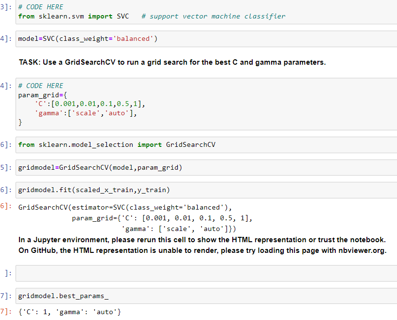

Project Title 1

Background: Brief description of the project background and motivation.
Problem Statement: Description of the problem being solved.
Data
Data Source: Description of the data source.
Data Characteristics: Description of the main characteristics of the data.
Data Preprocessing: Explanation of data cleaning, processing, and feature engineering steps.
Model Selection and Training
Model Chosen: Explanation of the model chosen and why.
Model Architecture: For complex models, a description of the architecture.
Training Process: Description of the training process, including hyperparameter selection.
Results and Evaluation
Evaluation Metrics: Description of the evaluation metrics and why they were chosen.
Experimental Results: Presentation of the experimental results, including visualizations.
Deployment and Application
Deployment Method: Explanation of how the model was deployed.
Application Scenarios: Examples of how the model is used in real-world scenarios.
User Feedback: If available, feedback from users or performance data in application.
Challenges and Future Work
Challenges and Limitations: Discussion of challenges and limitations encountered.
Future Work: Potential improvements and future research directions.
Project Demo
Code: Key code snippets and link to the code repository.
Visualizations: Visual representations of data and results.
Demo: Link to online demo or project demo video.
Conclusion
Summary: Summary of main achievements and personal gains.
Acknowledgements: Acknowledgement of help or resources provided by others.